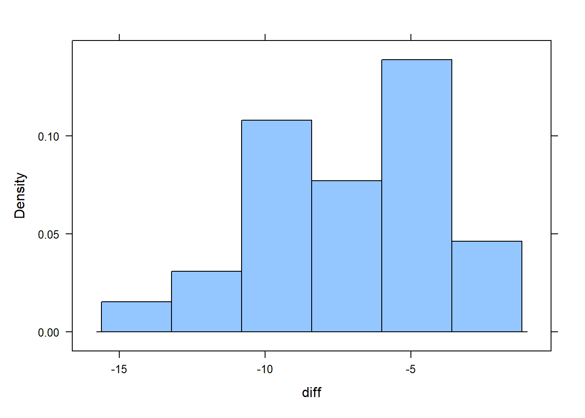
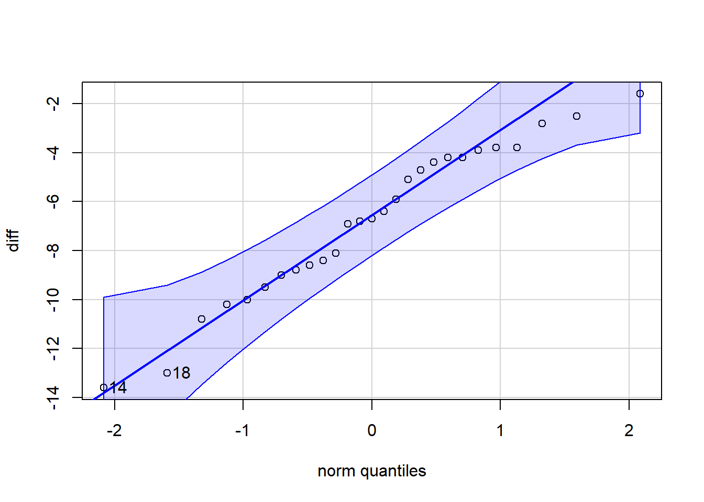
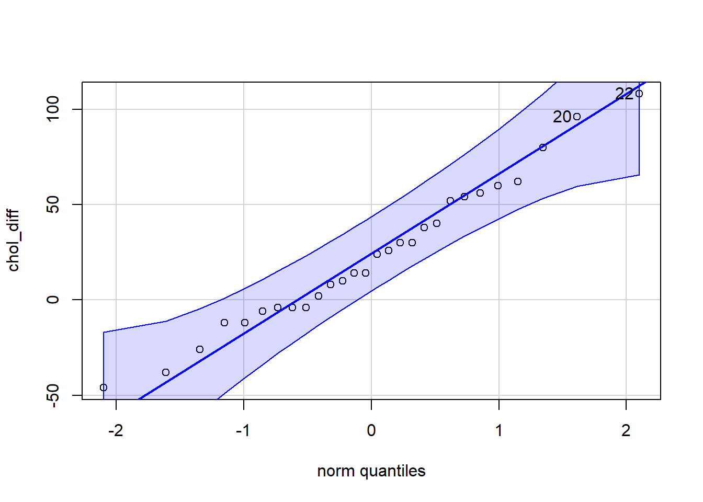

A matched pairs design is used in statistics to compare 2 treatments or conditions measured on subjects that are logically connected in a meaningful way. In the simplest case, measurements are collected on the same subject as in a before-and-after evaluation.
Matched pairs designs are often called “dependent samples” because knowing who or what is in the first treatment group determines who will be in the second. In the case of a before-and-after situation, if you are selected to be in the “pre” group, then you will also be in the “post” group. But pairs are not always the same subjects.
Examples
You want to study the difference in salaries between husbands and wives. If one spouse is selected for the study it automatically determines that the other spouse will be in the other group.
An ACT preparation course gives you a test before you take the course and after to see if the course improved test score
A weight loss program takes your weight at the beginning and after the 12 weeks in the program to see if the program reduced weight.
Comparing prices of a specific set of items between Walmart and Broulims. Because we are comparing the same items, we can take the difference between prices for each item.
Requirements for a Matched Pairs Analysis
As with the one-sample t-test, we have to make sure that the either the pairs are normally distributed or we have a large enough sample size.
With smaller sample sizes, create a qqPlot() using the car library to check for normality.
Watchouts
When we perform a matched pairs analysis, we will be doing a 1-sample t-test on the differences between the connected observations. One challenge is that we can define the difference either way: before - after or after - before.
A good practice is to define differences so that a negative number means “loss” and a positive number means “gain”.
For example, if we believe our weight loss program reduces weight, then defining post_weight - pre_weight should give a negative number, meaning weight lost during the program.
If you believe Walmart is cheaper than Broulims, defining the difference Broulims - Walmart gives a positive number, meaning how much you can save, on average, for shopping at Walmart.
Mathematically, it doesn’t matter which way we define the difference as long as we keep track of what a negative number and a positive number mean. This will define which alternative hypothesis we use.
Weight Loss Example
Weight data (in kg) were collected on 27 subjects before and after participation in a weight loss study.
Use the data to create a hypothesis test and confidence interval for the true mean weight loss on the program.
A “matched pairs” analysis takes advantage of the fact that there are 2 measurements on the same subjects.
min Q1 median Q3 max mean sd n missing
53.3 63.45 69.9 75.2 97 70.0963 10.63273 27 0
Step 3: Prepare the data for analysis
Decide how you’re going to define the difference (\(post - pre\) or \(pre - post\)).
Question: What does a negative number mean based on your definition? Answer:
# Decide which column to subtract from the otherdiff <- weight_loss$post - weight_loss$pret.test(weight_loss$post - weight_loss$pre, mu =0, alternative ="less")
One Sample t-test
data: weight_loss$post - weight_loss$pre
t = -11.145, df = 26, p-value = 1.059e-11
alternative hypothesis: true mean is less than 0
95 percent confidence interval:
-Inf -5.76249
sample estimates:
mean of x
-6.803704
Create a histogram and a qqPlot of the differences to determine if you will be able to trust the statsitical analyses:
# histogram of the differenceshistogram(diff)

favstats(diff)
min Q1 median Q3 max mean sd n missing
-13.6 -8.9 -6.7 -4.2 -1.6 -6.803704 3.172051 27 0
# Check if the differences are normally distributed:qqPlot(diff)

[1] 14 18
Step 4: Perform the appropriate analysis
Hypothesis Test
State your null and alternative hypotheses.
\[ H_0: \mu_{differences} = 0\]
\[H_a: \mu_{differences} < 0\]
\[ \alpha = 0.01\]
Questions to consider:
How did you define your difference?
Based on your decision for the difference, what does a negative number mean? a positive number?
Are you expecting the difference to be greater than, less than, or not equal to 0?
NOTE: One way to verify that you have used the correct alternative is to look at the difference as defined (weight_loss$post - weight_loss$pre) and decide which one you think is supposed to be bigger. Swap out the subtraction sign for the inequality that makes sense (weight_loss$post < weight_loss$pre). Therefore, your alternative should be “less” because \(<\) corresponds to “less than”.
Perform a t-test of the differences:
# Hypothesis t.test()t.test(diff, mu =0, alternative ="less")
One Sample t-test
data: diff
t = -11.145, df = 26, p-value = 1.059e-11
alternative hypothesis: true mean is less than 0
95 percent confidence interval:
-Inf -5.76249
sample estimates:
mean of x
-6.803704
State your conclusion in context of the research question:
Because P-value < 0.01 we reject the null hypothesis. We have SUFFICIENT evidence to suggest that participation in the weight loss program led to weight loss.
Confidence Interval
# Confidence interval using t.test()t.test(diff, conf.level = .99)$conf.int
I am 99% confident that the true average weight loss during the program was between -8.5 and -5.11 kilograms.
Your Turn
A study was conducted at a major northeastern American medical center regarding blood cholesterol levels and heart-attack incidents. A total of 28 heart-attack patients had their cholesterol levels measured two days after the heart attack and again four days after the heart attack. Researchers want to see if cholesterol levels reduced significantly four days after the attack versus two days after the attack. Use the level of significance of 0.05.
min Q1 median Q3 max mean sd n missing
-46 -4 19 52.5 108 23.28571 38.27857 28 0
# negative number means the cholesterol level goes down
Because we \(n < 30\) we need to check the qqPlot() to assess the normality of the differences.
qqPlot(chol_diff)

[1] 22 20
Step 4: Perform the appropriate analysis
Hypothesis Test
State your null and alternative hypotheses. \[H_0:\mu_{difference} = 0\]\[H_a:\mu_{difference} < 0\]
Confidence level : (\(1-0.05 = 0.95\))?
Perform a matched pairs t-test for the difference in cholesterol at day 2 and day 4:
t.test(chol_diff, mu =0, alternative ="less")
One Sample t-test
data: chol_diff
t = 3.2189, df = 27, p-value = 0.9983
alternative hypothesis: true mean is less than 0
95 percent confidence interval:
-Inf 35.60725
sample estimates:
mean of x
23.28571
State your conclusion: P-value(0.9983) is bigger than alpha value(0.05). So, I won’t reject the null hypothesis. I have sufficient evidence to suggest that the heart attack patients’ cholesterol difference between the 2nd day and the 4th day doesn’t have huge difference.
Confidence Interval
Calculate a confidence interval for the average difference.
State your conclusions and interpret the confidence interval in context of the research question: I am 95% confident that the average cholesterol index difference of the patients on 2nd day and the 4th day after they had heart attack is located between 8.442836 and 38.128593.